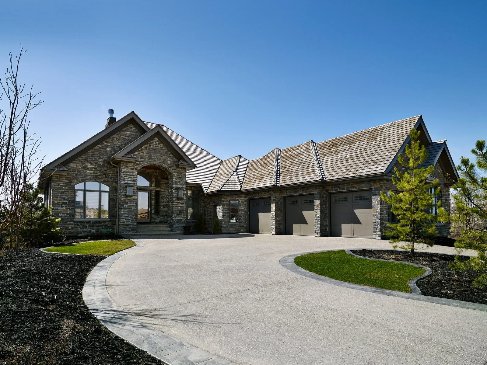

Jan 26, 2025
Why Choose Aacropolis Homes For Your Acreage Build?
Choosing the right builder is always an important decision, but when considering an acreage build it’s even more important to find a builder with not only experience with acreages …
Read Article